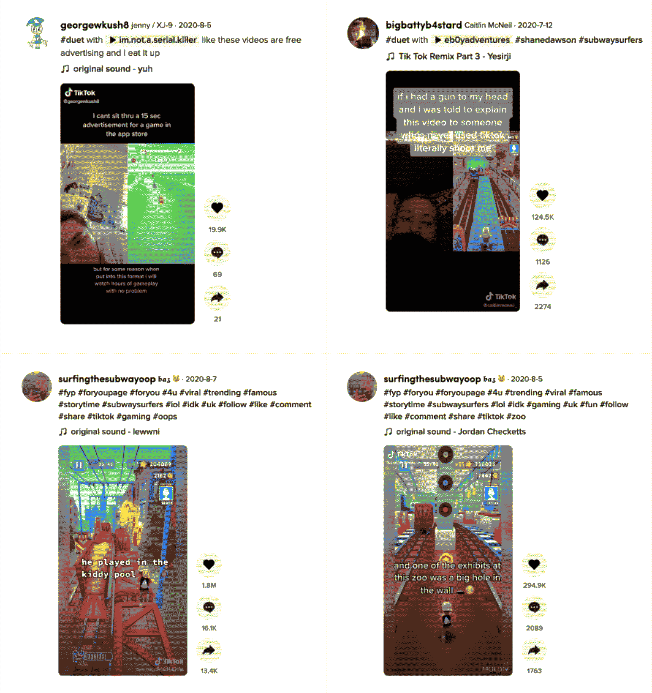
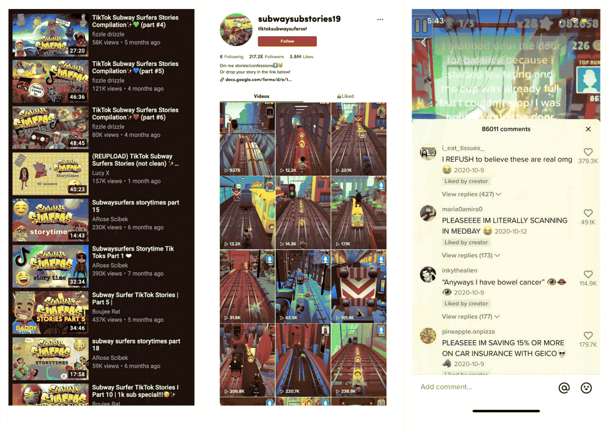

The summer months of 2020 saw a rise in a meme format on (primarily English speaking) American Tik Tok: widespread videos of Subway Surfers gameplay, overlaid sometimes with audio compilations of several well circulated memes (of which include singing from Shane Dawson, Gabbie Hanna and Nicki Minaj soundbites), during others featuring a ridiculous, incredibly personal anecdote read by an automated text-to-speech voice.
Many reacted to the trend with what might be typified as Gen (Generation) Z ambivalence — wondering at the intricacy of the videos’ layered references, @georgewkush8 duetted [1] a Subway Surfers Tik Tok (hereafter abbreviated as “subsurfer tok”), remarking, “i cant sit thru a 15 sec advertisement for a game in the app store but for some reason when put into this format i will watch hours of gameplay with no problem.”
As an endless runner game, Subway Surfers operates on an ever growing tension between the present and the future: as the pace of gameplay quickens, the player must adapt to the creeping zaniness underlying their mission to avoid capture by the inspector and his dog. The game is rife with nostalgic imagery of street culture and teenage rebelliousness: set in a vibrantly painted metro railway site, Subway Surfers bursts with dynamism, all the more complemented by its friendly, upbeat background music and the various sound effects triggered as one collects boost items along the way.
There’s a certain innocence to the game which might explain why so many of the “storytime” anecdotes that accompany subsurfer toks are so shocking and absurd. With the calm, composed text-to-speech software as intermediary, the emotional blow of these stories is immediately softened, their tone rendered inherently self-reflexive and matter-of-fact. A scroll through dedicated subsurfer tok accounts, where personal grievances and embarrassments are publicly aired in such a uniform manner, call to mind thumbnails and video titles of popular Youtubers, where conventionally crude topics [2] are strung together with much clickbait, all its inappropriate undertones packaged nicely for an audience of children.
The abundance of shiny, golden coins in the game is another clue to its target age group; accumulating wealth has never been so easy. As the main way to augment and enhance one’s Subway Surfers experience, coins become another incentive for routine use and “training,” in a get rich quick journey accompanied by satisfying aural feedback. As Aubrey Anable notes in Playing with Feelings: Video Games and Affect, “[during gameplay] we seem to momentarily leave the realm of self-measurement and management… to play with and among heightened and fantastical versions of [these very same things].” (Anable 79) The semi-opaque status bars in Subway Surfers offer an illusion of lightness — visual clarity of information through this simple hierarchy effectively lock the player into perpetual parkour.
Because the game relies on small, deft swipes for the player to control their character, microgestures in subsurfer toks become target practice, the urban landscape saturated not only with cheerful splashes of primary colors but also auditory references to trivial internet drama, multiplied ad infinitum. To watch a subsurfer tok is to train oneself to recognize generational inside jokes — it is to hardwire oneself in a mission to parse a rich cultural fabric by voraciously consuming media.
Perhaps the seemingly benign interface of Subway Surfers neatly parallels those of the various social media marketplaces people find themselves wandering about: whereas the Instagram/Twitter doomscroll feels like a slow march towards death, the energy (however minimal) afforded by subsurfer toks suggests that this hybrid mode of “scrolling” (via endless running towards a dynamically updated horizon) is somehow more participatory, even if the Tik Tok duets suggest otherwise.
Information — the ever-distant landscape; the obstacles to avoid; the boost items to pick up; as well as the near nonsensical “storytime” — becomes what Patrick Crogan in Gameplay Mode: War, Simulation, and Technoculture writes of as “a transitory material state… the medium through which the gamer strives for control over the system.” (Crogan 94–96) The subsurfer tok is successful in its juxtaposition of order and disorder, the former present in the monotonous voiceover, the latter in the characters’ relentless acceleration. It unravels gloriously as a dumpster fire of a meme, an audiovisual trainwreck that can only be experienced through the viewer’s sheer determination to comprehend it all. Past, present, and future scramble and intermix in the subsurfer tok, as “[attempting] to bring the future under control, [in this model, means] representing it in terms of the present.” (Crogan 106)
Who is the opponent in Subway Surfers, and by extension, subsurfer toks? Is it time? Is it the player themself? In a game where “information aspires to the absolute speed of being in advance of events,” perhaps the meme is its audience’s own enemy. (Crogan 96) The ultimate affect of subsurfer toks bears resemblance to advertisements of other endless runner games, as if mass produced without any human intervention. Subsurfer toks’ use of an auto-generated voice as surrogate, as prosthesis reflects the amount of noise that surrounds visitors of the internet: it is a step towards Taboola, some seedy, grimey ad-filled wasteland of corporate America.
As @georgewkush8 notes, the format of the subsurfer tok is what makes it so hypnotizing — its screen recorded, layered quality suggests a candidness that many may find lacking in the mainstream — it is as if the honesty to completely abandoning any pretense of authenticity gains its own sincerity. What implications might this format have for visitors of the internet? How might one be critical of the ads they come across, and does it matter whether a video is an advertisement? While these videos are presumably edited by people, one can easily imagine the automation of every stage of their creation, from the gameplay to the filtered, dull narration. The information density of the meme format is reminiscent of the uncanny world of kids content on Youtube, where family friendly keywords and massively popular movie characters come together in the most frightening ways imaginable: does it matter, then, whether an ad is made by people, or randomly generated by an algorithm? Is passive engagement necessarily harmful, and by whose measures are these moral claims made?
The stories told in subsurfer toks often need no corroboration; the focus is instead placed on the viewer’s ability to process all the details hurled at them. The meme’s setting points to a simpler time that allows for an indulgence in nostalgia, while its extreme tonal contrast appeals to Gen Z’s search for chaos as a mode of self expression. The format is so popular that Youtube compilations of “Subway Surfers stories” abound, much like those of Vine, where the vertical format of mobile video is flanked by a blurred Subway Surfers landscape.
While they may seem trite, Subway Surfers Tik Toks demonstrate a growing tendency towards extremes in Gen Z circles; as an indicator of one’s meme literacy, subsurfer toks reframe extended tech use as a badge of honor for those extremely online. Their prevalence on Tik Tok, though short lived, highlights the importance of good bad taste in contemporary digital media: their intricate structure invites a reconsideration of what is real.
[1] The duet feature allows people to react to content, tiling their video (here most often a candid selfie mode video) aside the original.
[2] Themes roughly parallel American Vandal — sex, death, drugs, and bodily fluids of all sorts.